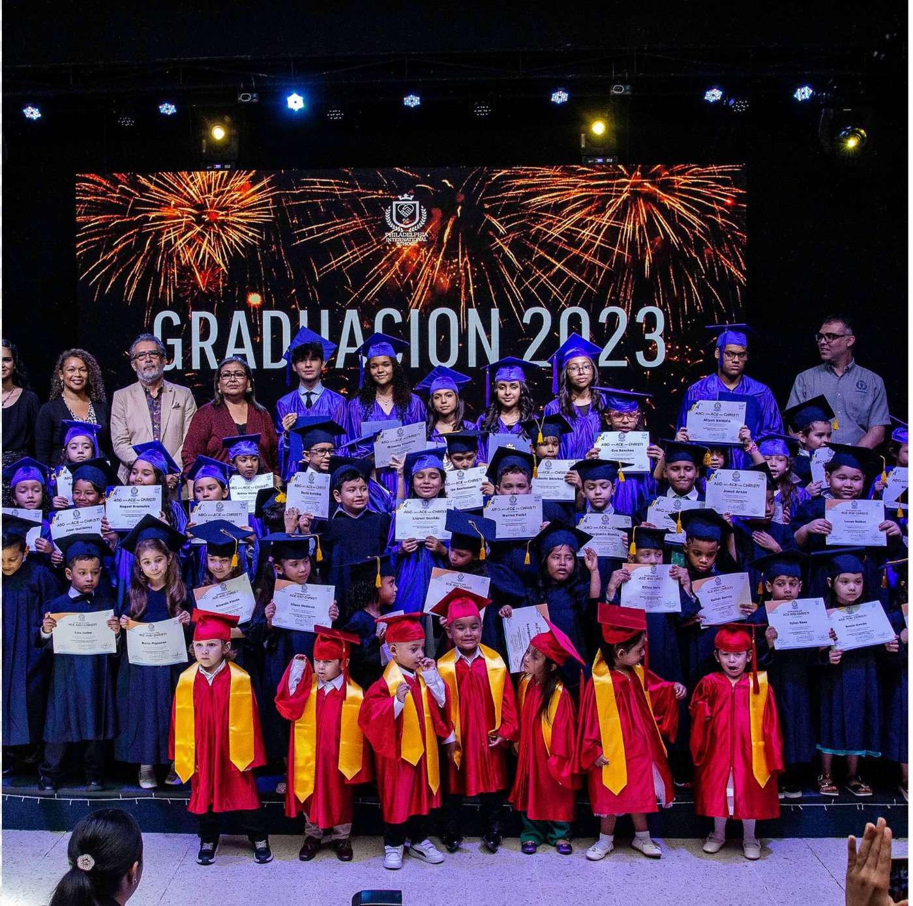
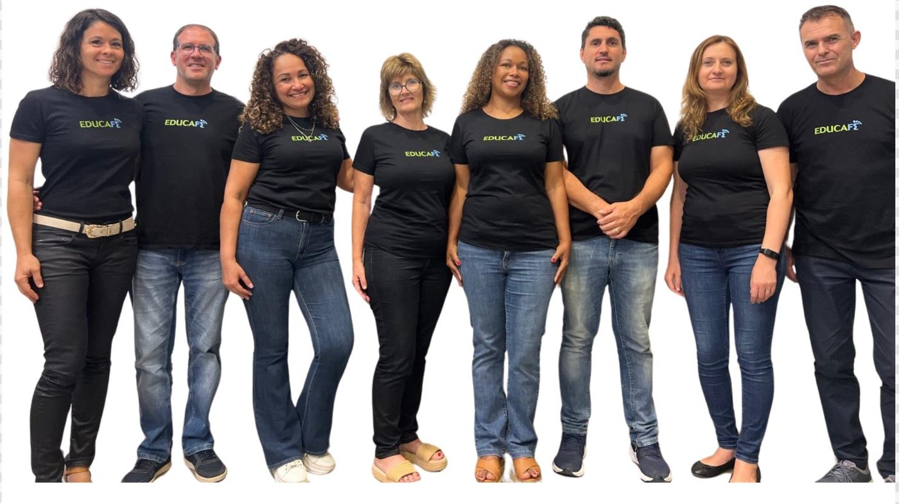

5 → 165
students in 4 years (Panama)
Church-Centered Community Impact
Chanak Foundation helps churches and mission-aligned partners activate practical local initiatives for children, youth, and families—through structured programs, local collaboration, and donor-funded implementation.
Faith-driven | Community-based | Education-centered | Scalable impact
Proof of Concept
In 2020, Chanak's founding team helped launch the Philadelphia International School inside Iglesia Casa de Poder in Panama City. In four years, it grew from 5 to 165 students — becoming a nationally recognized model of faith-integrated Christian education.
In 2021–2022, we collaborated with Panama's Ministry of Education on homeschool legislation, shaping policy for thousands of families.
Now we're applying that same proven model to Spain's Costa Blanca, where Christian families have no affordable alternative.
students in 4 years (Panama)
collaboration with Panama's Ministry of Education
Spain hubs opening in Tarragona, Vinarós, Jávea, and Torrevieja

The Need in Spain
#1 cause of non-natural death among Spanish youth 15–29
INE 2023
1 in 4 students affected
Defensor del Pueblo
€600–1,200/month for private Christian education — we deliver it for €200–280
Community Hubs
Inside local churches. Academically rigorous. Financially accessible.
Founding Families Open Enrollment
Visionary Family: Medalith & Juan Carlos
Founding Families Open Enrollment
Visionary Family: Mary Claudia & Henry
Formation Pathway
We don't just form students. We form leaders.
Identity, roots, first service
Vocational discovery, purpose formula
Real leadership projects, financial literacy
Capstone, university portfolio, SAT prep
The Need
Many families need practical educational support and trusted guidance close to home. Youth need purpose, mentoring, and values-based development that helps them grow in character and direction.
Many churches are eager to serve their communities in tangible ways beyond Sunday gatherings, but often need support structures, partner networks, and implementation pathways to do that consistently.
When church spaces, local partnerships, and mission resources are aligned, communities gain a stronger bridge between faith, family support, education, and service.
Our Solution
We align churches, community leaders, and mission partners around practical local priorities and service opportunities.
We help organize church-based learning support, family workshops, leadership pathways, and volunteer coordination.
We connect donations, sponsorships, and local teams to concrete initiatives that serve children, adolescents, and families.
Community Impact in Action

What Your Donation Makes Possible
Prepare and equip church spaces for recurring education support and mentoring.
Provide practical formation sessions that help families support children and teens.
Develop mission-aligned resources for learning, discipleship, and leadership growth.
Create pathways that connect youth purpose, responsibility, and future readiness.
Mobilize church and volunteer teams for local service initiatives and outreach opportunities.
Prepare leaders and volunteers to launch and sustain initiatives with consistency.
A Replicable Model
Programs We Support
Academic reinforcement and mentoring in values-oriented, relational environments.
Practical tools that strengthen parenting, communication, and home support structures.
Character-centered leadership pathways for adolescents, volunteers, and emerging leaders.
Guided exploration connecting calling, skills, service, and responsible work pathways.
Educational and faith-based resources developed to support implementation and formation.
Organized outreach projects that connect local needs with practical church-led action.
What This Can Look Like in a Local Church
A church opens space each week for educational support sessions, family orientation workshops, and mentoring.
Teens participate in structured mentoring, faith-based leadership development, and vocational discovery activities.
Families receive actionable tools to strengthen home learning routines, communication, and long-term support.
Church and partner volunteers mobilize for outreach initiatives, including service contexts such as Camino de Santiago-linked opportunities and local mission projects.
For Churches
We partner with churches to activate mission-aligned initiatives that strengthen youth, support families, and mobilize service in the local community.
For Foundations and Organizations
Chanak Foundation offers a mission-aligned community model designed for donors seeking practical local delivery through church and partner networks.
Stewardship, Trust, and Transparency
Chanak Foundation operates as an initiative of CHANAK TRAINUP EDUCATION, INC. and is committed to mission-focused use of funds, accountable implementation practices, and trusted local partnerships.
We maintain direct communication channels for donors, churches, and institutional partners seeking project details and partnership alignment.
Manual confirmation needed before publishing expanded claims: reporting cadence, governance detail, grant compliance documentation, and any public impact metrics.
Ways to Give
Provide immediate support for active projects and local implementation.
Help sustain recurring programs through ongoing mission support.
Fund setup, coordination, and launch support for church-based impact spaces.
Support creation and distribution of mission-aligned educational materials.
Strengthen caregivers through practical workshop programming and resources.
Partner through grants, sponsorships, and targeted program funding.
Equip congregations to serve local communities through coordinated initiatives.
Advance model expansion and long-term operational capacity.
Contribute services, materials, or expertise that directly support implementation.
JOIN THE MISSION
Philadelphia to Panama. Panama to Spain. One proven model. Families who need you. Give today.
Give Now501(c)(3) · EIN 36-5154011 · Tax-deductible in the United States